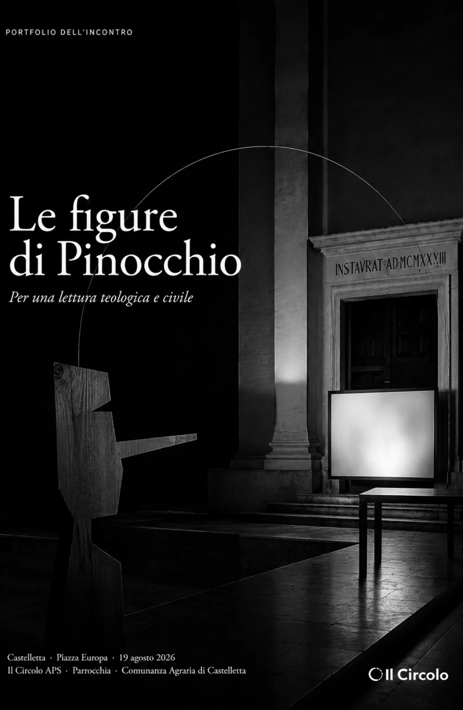
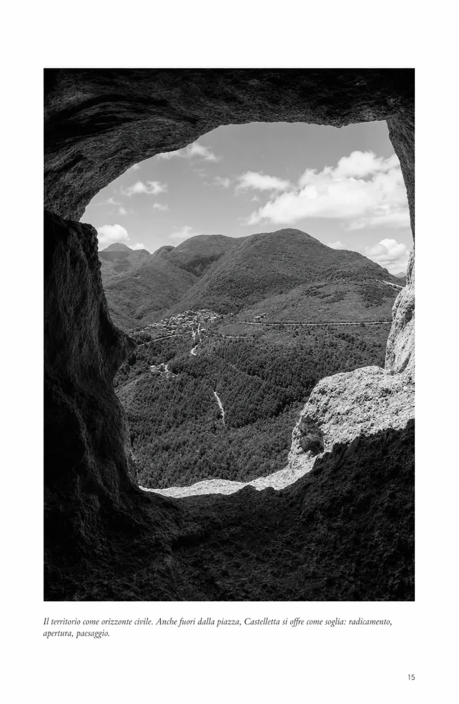
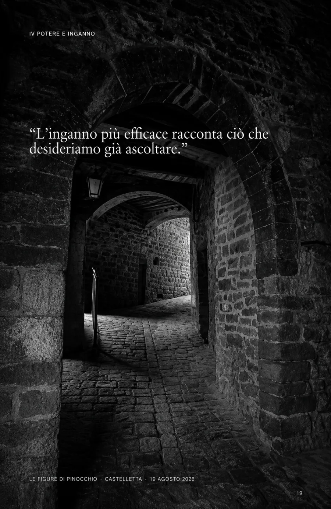
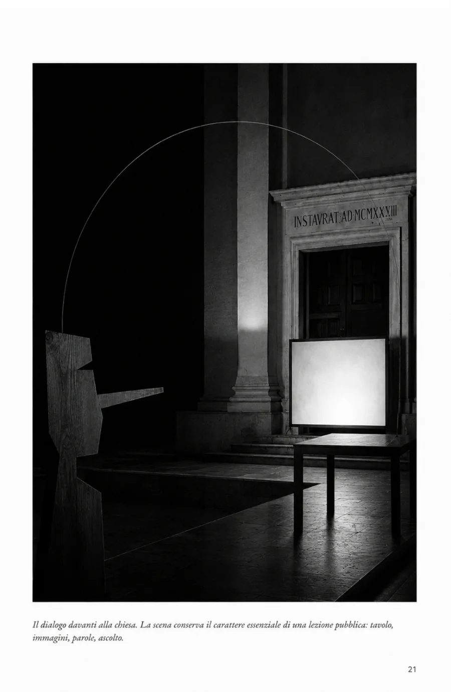
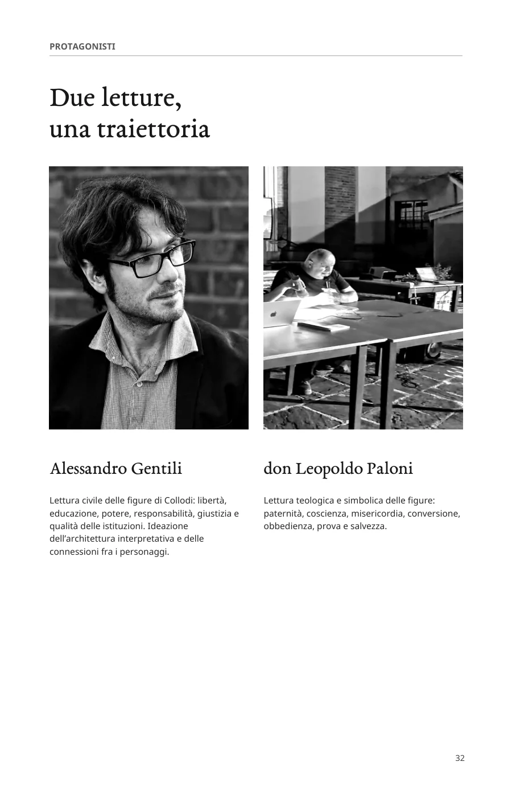

Origine e generazione
Collodi, Geppetto, Mastro Ciliegia e il problema di una libertà che nasce prima di sapersi governare.
Portfolio dell'incontro
Per una lettura teologica e civile
Una piazza, un classico e due linee di lettura. Il portfolio conserva la forma dell'incontro tenuto a Castelletta il 19 agosto 2026 e il percorso costruito attraverso i personaggi di Collodi.

Una sera restituita alla memoria
Il portfolio raccoglie ciò che ha dato forma alla serata: una piazza, un classico, due chiavi di lettura e un pubblico disposto a misurarsi con domande ancora aperte.
Il bianco e nero concentra lo sguardo sulla relazione fra persone, spazio e parola. Piazza Europa emerge come luogo civile, attraversato per una sera da un esercizio condiviso di ascolto e interpretazione.
Architettura del dialogo
Il percorso attraversa Pinocchio come un libro di formazione e, insieme, come una lente sul rapporto fra individuo, comunità e istituzioni.
Collodi, Geppetto, Mastro Ciliegia e il problema di una libertà che nasce prima di sapersi governare.
Lucignolo, desiderio, limite e conseguenze: quando la fuga promette una libertà senza forma.
La Fata Turchina e il Grillo Parlante come figure della possibilità di ricominciare e del giudizio interiore.
Mangiafuoco, il Gatto, la Volpe e l'Omino: coercizione, frode e seduzione nelle loro forme differenti.
Il Giudice, i Carabinieri e la distanza possibile tra procedura, obbedienza e giustizia.
Il Pescecane, il ritorno a Geppetto e il passaggio dalla dipendenza alla responsabilità.
Dentro il portfolio
Il documento alterna memoria dell'incontro, paesaggio, immagini concettuali e materiali della serata.




Documento integrale
La versione web è ottimizzata per la lettura a schermo. Su smartphone puoi aprire il PDF in una nuova scheda.
Lettura civile
Libertà, educazione, potere, responsabilità, giustizia e qualità delle istituzioni. Ideazione dell'architettura interpretativa e delle connessioni fra i personaggi.
Lettura teologica
Paternità, coscienza, misericordia, conversione, obbedienza, prova e salvezza.
Continua il percorso
Questo portfolio appartiene al campo della scrittura civile: il punto in cui ricerca, parola e luoghi diventano una forma pubblica verificabile.